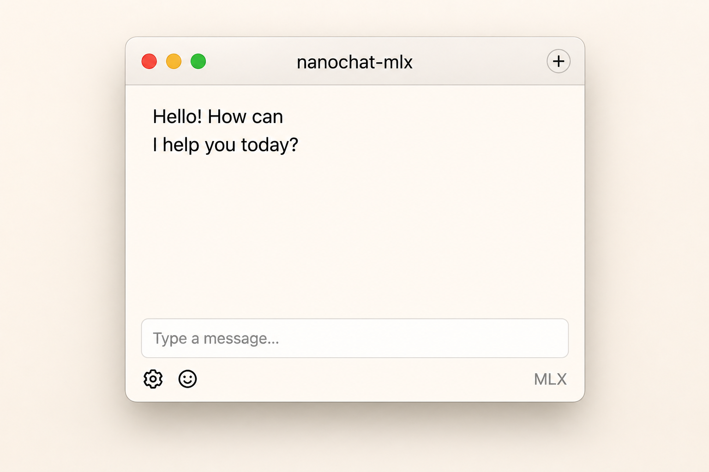
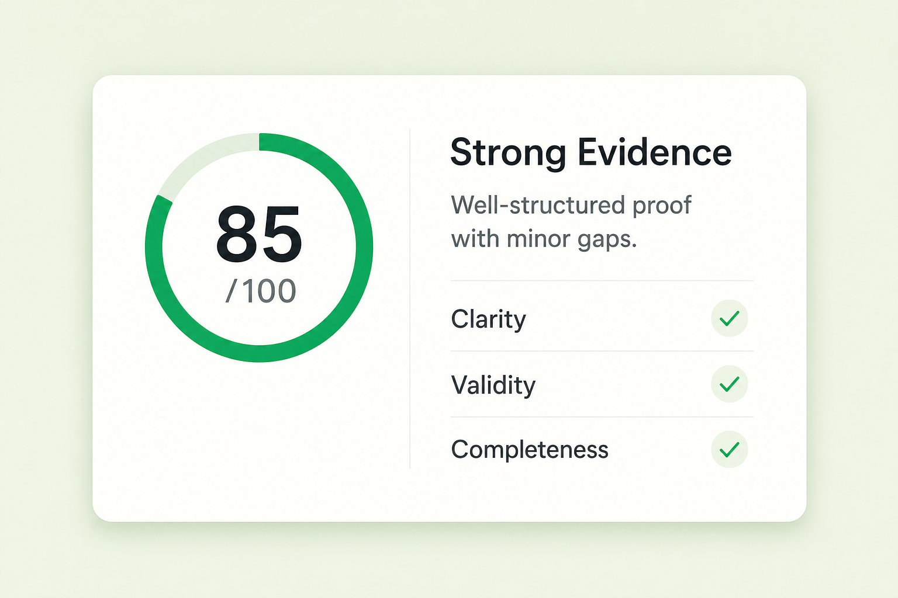
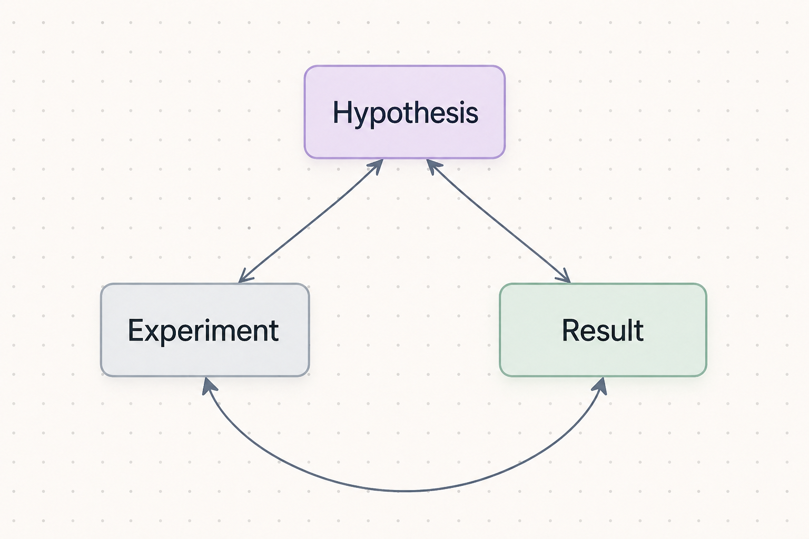
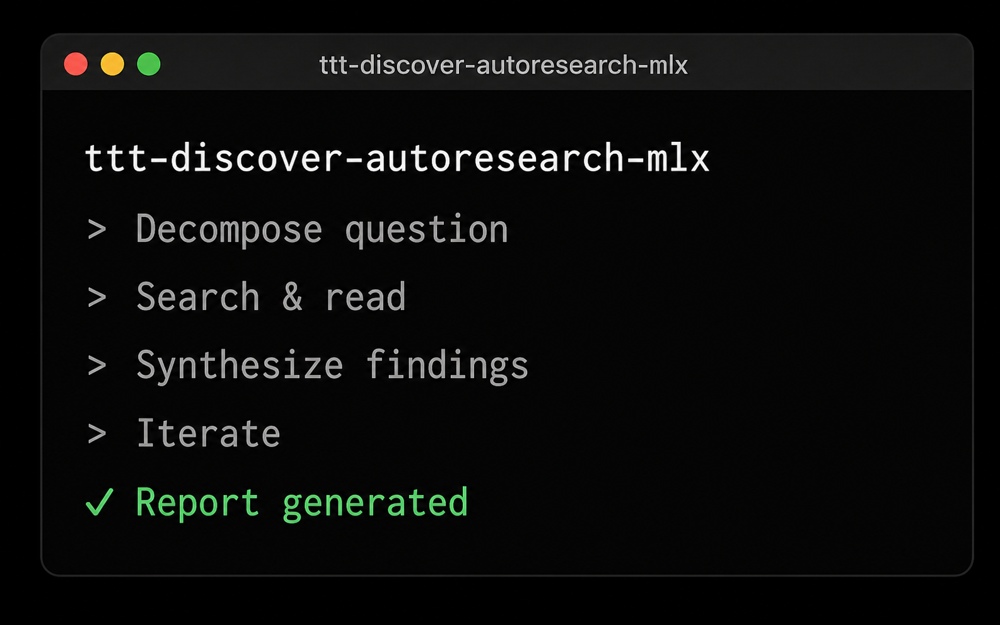

Personal experiments in software, agents, and local ML
I build macOS utilities, AI tooling, and research experiments that live at the intersection of productivity, creativity, and local intelligence.

nanochat-mlx
Native macOS chat app for local LLMs powered by MLX.

TabPilot
AI copilot in your menu bar for smarter browsing.

SafariMarkdown
Convert any webpage to clean, readable Markdown.

SunShift
Automatically shifts your display with the sun.

Proofgrade
Grade proofs with AI. Instant feedback for students.

hypothesis-forge
Generate, connect, and evaluate research hypotheses.

adaptive-rag-rlm
Adaptive RAG with reinforcement learning for better answers.

ttt-discover-autoresearch-mlx
Autonomous research agent with MLX at the core.